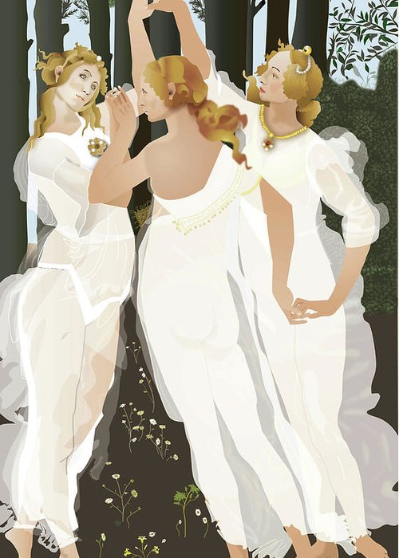

Ateliers les déesses
Rencontrer son féminin à travers la roue des déesses
Mesdames, Mesdemoiselles, vous connaissez-vous vraiment ?
Etes-vous du genre Artémis la guerrière aux pieds nus, à vous emballer pour de nobles causes ?
Ou bien Athéna, sûre d'elle et de sa carrière, mais pas très à l'aise avec ses émotions ?
Perséphone, dans l'ombre de son amant terrible et son attrait prononcé pour le mystère ?
Demeter, large sourire et bras ouverts, chantonnant derrière ses fourneaux ?
Peut-être ne vivez-vous, comme Aphrodite, que pour l'amour et la beauté ?
A moins que vous ayez le port altier d'Héra, avec un goût certain pour le luxe et la prestance !
Eh oui ! Les déesses vivent à l'intérieur de nous, et ça vaut le coup d'aller les rencontrer. Il y a fort à découvrir, guérir, réhabiliter, pour trouver, enfin ! un équilibre et une jouissance de toutes nos parts.
À travers les enseignements théoriques, mais aussi des outils pratiques, des rêves éveillés, ainsi que mon parcours de vie, je vous propose de recevoir cet enseignement en vous-mêmes et de l'intégrer de manière concrète dans vos vies.
Une connaissance précieuse, transmise à toute femme désireuse de se connaître et d'évoluer vers une vie plus riche et plus juste. Attention, dans ces ateliers, ne cherchez pas le féminin sacré dans des spiritualités et des imaginaires lointains ! Il est présent chez une Rihanna comme chez une Brigitte Macron, votre mère, votre voisine, votre collègue et votre pire ennemie... Le regard que vous porterez sera modifié et éclairé de votre connaissance. C'est très appréciable :)
Exemples de problématiques pouvant être dissoutes par le stage:
- attirance vers relation amoureuse destructrice
- impossibilité de couper un mauvais lien
- tendance à la dévalorisation
- sexualité non épanouissante
- tendance à ne pas faire ce qui nous fait du bien
- manque de créativité
- difficultés de concilier la mère et l'amante
- méconnaissance de soi qui fait que l'on a la sensation d'errer dans la vie
- impression de toujours faire le bien pour autrui sans reconnaissance
- rejet/désamour/rancœur avec sa propre mère
- sensation de "se faire bouffer" par ses enfants
- difficulté relationnelle avec un type de femmes/d'hommes
Infos Pratiques
les samedis 10, 17 et 24 mars 2018
de 20h à 23h
au " Saveurs bio" : 22 Rue Maurice Fonvieille, 31000 Toulouse (quartier St Georges)
tarif : 190 euros les trois.
nombre de places limitées.
Inscription
Remplissez et renvoyez ce bulletin d'inscription ainsi qu'un chèque d'arrhes de 80 euros à l'ordre de :
Agathe Mainguy
7 rue St Bernard
31310 Montesquieu Volvestre
Annulation
En cas de désistement moins de 3 semaines avant le début des ateliers, les arrhes sont intégralement perdues. En cas d’annulation par Agathe Mainguy, les arrhes sont intégralement remboursées.
Agathe Mainguy a reçu cet enseignement par Hamainya Woman qui l'a elle-même reçu de la tradition cherokee.